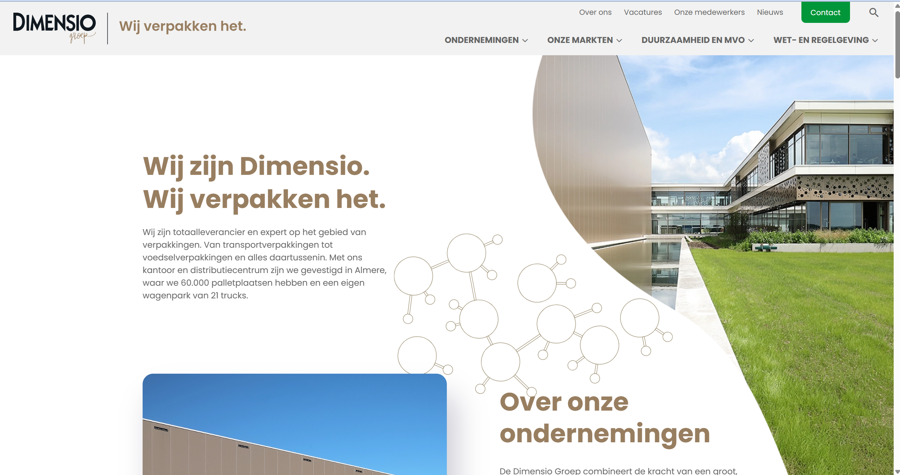

<!doctype html>
<html lang="nl">
<head>
  <meta charset="utf-8" />
  <meta name="viewport" content="width=device-width,initial-scale=1" />
  <title>Testsite — Dimensio</title>

  <!-- n8n chat widget styles -->
  <link href="https://cdn.jsdelivr.net/npm/@n8n/chat/dist/style.css" rel="stylesheet" />

  <style>
    /* Optional page background */
    html, body { height: 100%; margin: 0; }
    body { background: #000; }
    .full { position: fixed; inset: 0; overflow: hidden; }
    .full > img {
      width: 100%; height: 100%;
      object-fit: cover; object-position: center;
      display: block; user-select: none; -webkit-user-drag: none;
    }

    /* Brand the widget via CSS vars (optional) */
    :root{
      --chat--color-primary:#e74266;
      --chat--header--background:#101330;
      --chat--header--color:#f2f4f8;
      --chat--border-radius:14px;
      --chat--window--width:360px;
      --chat--window--height:560px;
    }

    /* Hide “Powered by n8n” safely */
    .n8n-chat-container [class*="powered" i],
    .n8n-chat-container a[href*="n8n.io"]{
      display:none !important;
    }

    /* Keep some bottom room on very small screens so the launcher isn’t covered */
    @media (max-width: 480px) { body { padding-bottom: 64px; } }
  </style>
</head>
<body>
  <div class="full">
    <!--  -->
  </div>

  <!-- Your chat script (bump v= when you change chat.js) -->
  <script type="module" src="chat.js?v=6"></script>
</body>
</html>
